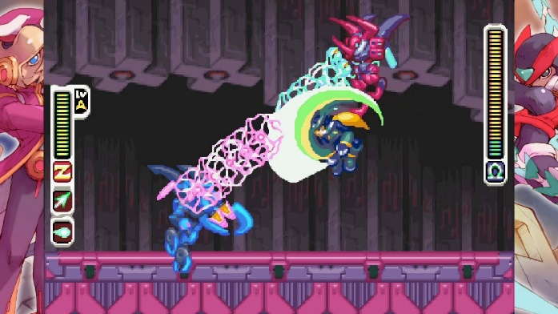
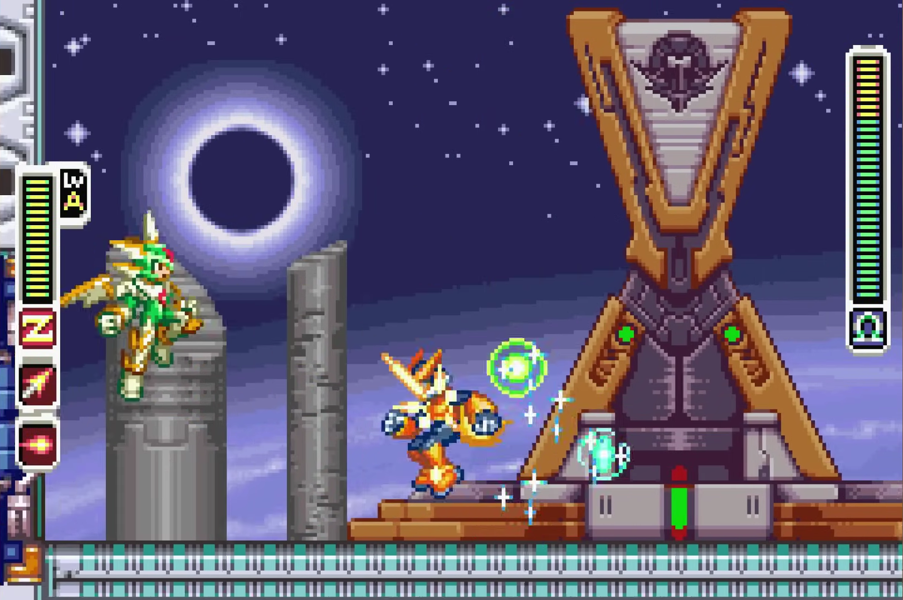
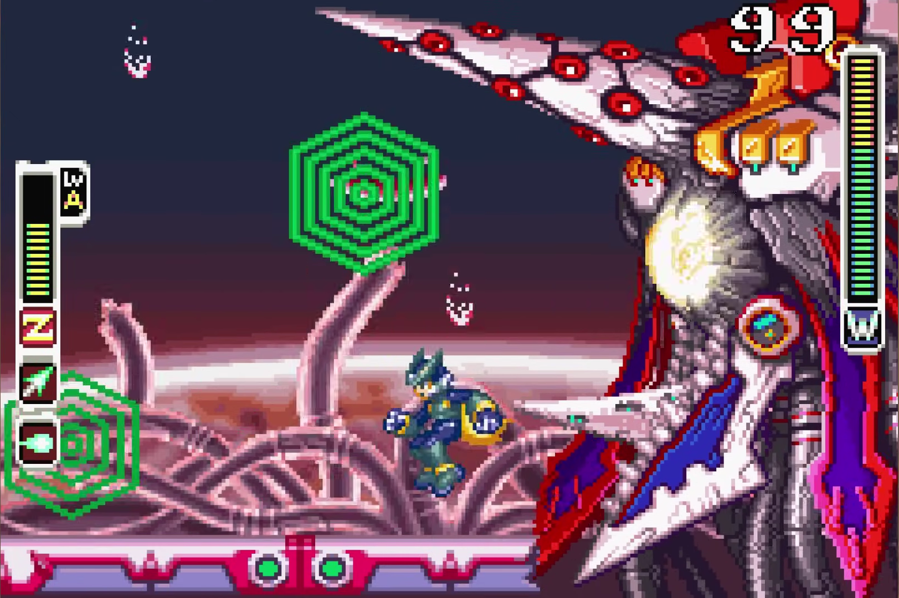
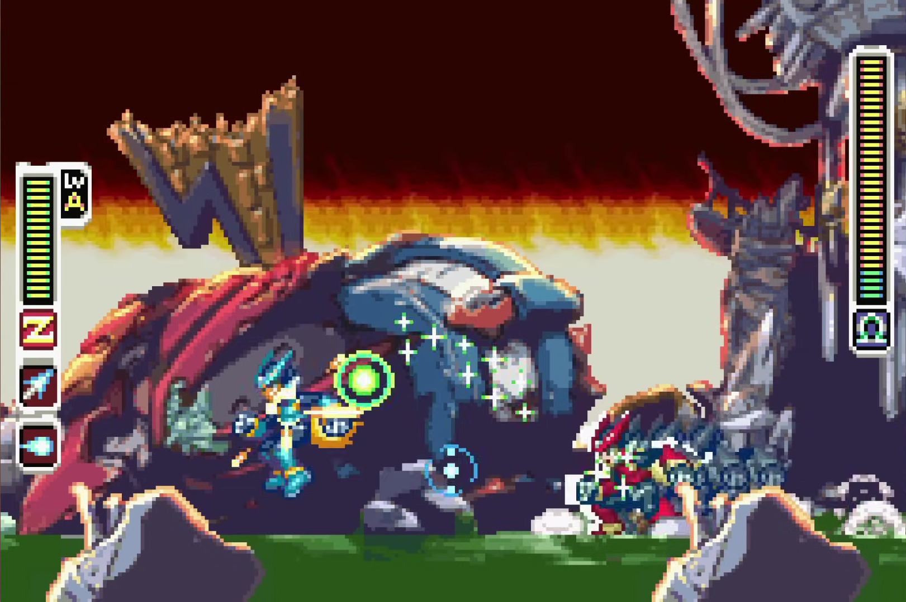

The Top 5 Megaman Zero Bosses!
12/3/2024Introduction
The mega man series was always known for its bosses. The Megaman zero series has some of the best combat. So therefore, it has some of the best bosses in the series. Lets go through the 5 best.

4. Kuwagust Anchus & Herculious Anchus (MMZ2)
Usually with the boss rematch, they are just rematches that are exactly the same before the end of the game. Meanwhile, when you get to Kuwagust Anchus, he brought his brother form the first game. They have all of their attacks form their respective fights and some team up attacks which makes for a thrilling tag team 1v2.
3. Copy X (MMZ3)
Copy X in Megaman Zero 3 marks the turning point for the game and the end of the Megaman Zero 1 throwback bosses. Compared to his Megaman Zero 1 counterpart, he is a vast improvement. They cut out the terrible 2nd form and instead had what was good and it makes for a really good boss fight. Copy X uses the three elemental chips (lightning, fire and ice) against you and his weakness changes depending on what he is using. This fight really feels like you are fighting Megaman X if he had gone bad.
2. Dr. Weil (MMZ4)
The Main antagonist and final of the series. Of course, they had to give him one of the best final bosses in the series. Dr. Weil is a simple yet complex fight in that the entire time, you are fighting under a 2-minute time limit. His weak spot is not always exposed and will only be vulnerable when he uses certain attacks. Also the music Falling down is one of the best in the series capturing the desperateness of the situation of the space station falling down to earth.
1.Omega (MMZ3)
The final boss of Megaman Zero 3, the Messiah, or so he claims, is by far the best boss in the Megaman Zero series and in the Megaman franchise as a whole. This duel with the palette swap Zero is everything that the game builds it up to be. Before the fight it is revealed that the Zero you been playing as is not the original Zero, or at least is using a reproduced body, while Omega is the true Zero. Megaman X comes in at the end telling Zero that it does not mater what body he uses, he is Zero. Omegas fight consists of moves that you can do like charge saber and buster shots, but he also has moves form the Megaman X series like Ryuenjin. The music for this Cannonball. is without a doubt the best theme in the series with the climatic piano help making this duel of red more intense.